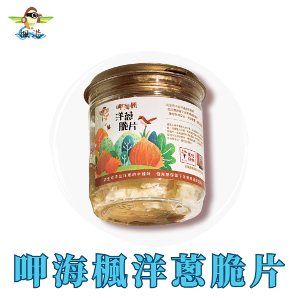
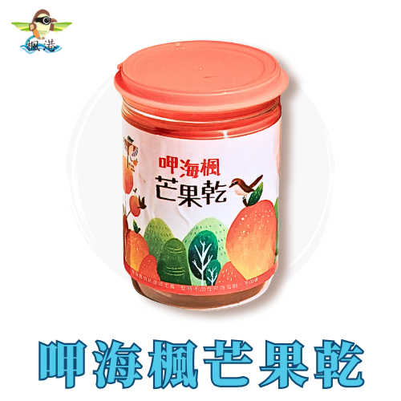

品牌故事
在地風土 · 共好加工 · 自然風味
協會積極推動社區產業發展，例如結合地理特色和人文風情，發展具有在地特色的經濟活動，例如結合楓港調民謠的文創產品等。
產地風景 / 品牌日常
結合地理特色和人文風情，發展具有在地特色的經濟活動
協會積極推動社區產業發展，例如結合地理特色和人文風情，發展具有在地特色的經濟活動，例如結合楓港調民謠的文創產品等。
在地風土 · 共好加工 · 自然風味
協會積極推動社區產業發展，例如結合地理特色和人文風情，發展具有在地特色的經濟活動，例如結合楓港調民謠的文創產品等。

落山風下成長的洋蔥製成，保留鮮甜原味，風味獨具。
$70 · 40g/罐

海風加持的在欉黃愛文芒果，24小時二次烘焙製成，香氣濃郁撲鼻。
$160 · 100g/罐